Foundations · 09
01ai, in mono.
Geist Mono Bold, outlined to paths, with the slashed zero that tells a machine's 0 from a person's O. It reads at a glance at any size, in either mode. The app icon is the first two characters in a graphite tile, with a cyan caret: the system, ready for input.
Versions



<svg viewBox="44 -726 2328 742" role="img" aria-label="01ai" style="height:32px;color:#E7EAEE"> <path fill="currentColor" d="…from 01ai-wordmark-currentcolor.svg…"/> </svg>
Clear space
Keep a margin of x on every side, where x is the height of the 0. Nothing, whether type, an edge or another logo, enters that space.
Minimum size
20px tall on screen for the wordmark, 16px for the icon. Below 20px the slash in the zero closes up; use the icon instead.

Misuse
The logo was chosen because it is impossible to misread. Each of these makes it harder to read.